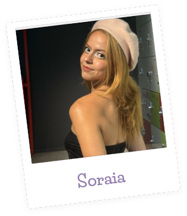

Meu nome é Sol. Como Engenheira de Software e estudante de Engenharia da Computação no IFCE, amo tecnologia como minha profissão e amo maquiagem e história como hobby. No myGlow, pude integrar tudo isso, trabalhando no desenvolvimento para iOS e pesquisando as raízes históricas por trás das maquiagens de cada subcultura para elaboração dos roteiros. Ver como o contexto social e a moda influenciam a forma como nos maquiamos e a diversidade de expressão pessoal através da maquiagem foi uma experiência única.
 LinkedIn
LinkedIn
 GitHub
GitHub